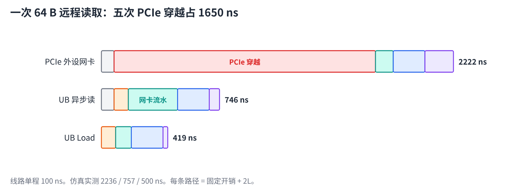
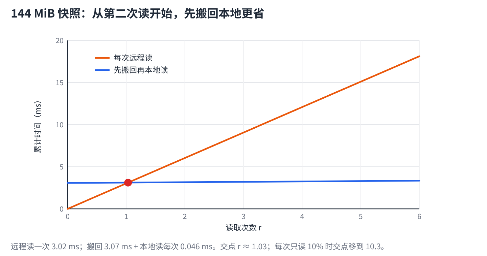
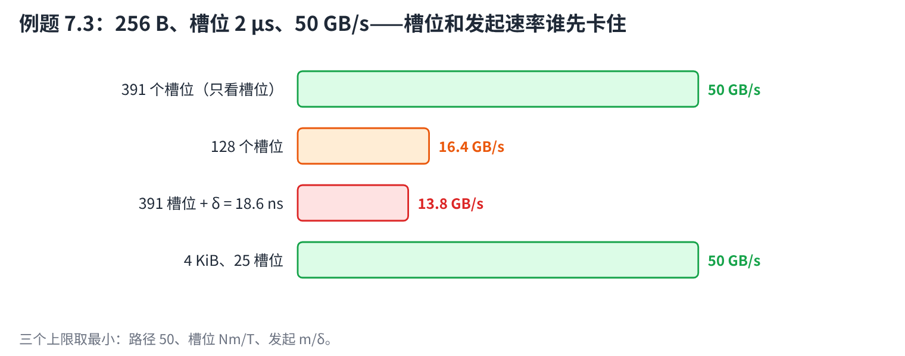
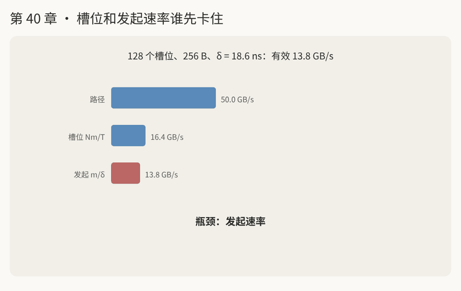

第 40 章 · 远程访问的路径与并发：一次读多久、同时能读几个
本地运行
git clone https://github.com/wikieden/ai-infra-from-constraints
cd ai-infra-from-constraints/code/notebooks
pip install jupyterlab torch numpy
jupyter lab ch40_remote_access.ipynb也可以下载后直接用 VS Code 打开 .ipynb 运行。需要 GPU 的章节在 Colab 里选「代码执行程序 → 更改运行时类型 → GPU」。
本章回答：一次 64 B 的远程读取，2.2 μs 都花在哪了？控制器接在片上总线上为什么能省掉 1.65 μs？一份远端快照，读几次就该搬回本地？要用满 50 GB/s，需要多少个请求同时在路上，请求又能发得多快？
讲解日期：2026-11-24 · 上一章：第 39 章 跨节点流量与物理路径 · 下一章：第 41 章 数据交接、顺序与状态管理
对应原文：materials/ai-infra-book/manuscripts/07-数据中心网络.md§7.3 L315–L519（例题 7.3，图 7-15 到 7-29）；§7.3.3 内存语义略讲
本章缩写：RPC = Remote Procedure Call（远程 / 过程 / 调用）· GPUDirect RDMA = 网卡直接读写 GPU 内存 · URMA = Unified Remote Memory Access（统一 / 远程 / 内存访问，UB 接口）· TLP = Transaction Layer Packet（事务层 / 报文，PCIe）· posted / non-posted = PCIe 中不等回应 / 等回应的事务。全部缩写见 缩写与术语表
讲解
第一步：交接 = 写数据 + 发通知；谁来发起（2026-11-24）
类比：寄包裹加短信。 包裹放进对方的快递柜（单边写），再发一条短信"已到，取件码 xxx"（通知）。要对方按你的方法处理，就是打电话请他办事（RPC）。
原文 L317–L361：
- 单边读写：发起方直接访问预先授权的远端内存，对端程序不参与搬移，适合已知位置的大块分片。
- 双边消息：接收方预先提交接收请求，适合来自多个发送方的通知。
- RPC：参数编码直接影响开销；1 MiB 二进制放进 JSON 的 base64 字段变成约 1.33 MiB。配套测量里请求从 1.33 降到 1.00 MiB，客户端 CPU 处理从 9.8 降到 1.1 ms；但整体调用还要看网络和远端等待。
谁发起：CPU 发起时，GPU 报告就绪 → CPU 构造请求 → 网卡 → 完成后再交回 GPU，即使载荷不经主机内存，控制交接也费时。GPUDirect RDMA 让网卡直接读写 GPU 内存；设备发起（GPU 经 NVLink、设备经 URMA）让产生数据的一方直接发出。8 KiB 消息启动 5 → 2 μs，总时间 5.2 → 2.2 μs；64 MiB 时这 3 μs 微不足道。
一句话：小数据先缩短发起路径，大数据先提带宽；操作系统建映射和权限，设备做授权过的快操作。
第二步：一次 64 B 远程读取的账（略讲）（2026-11-24）
类比：去邻居家借一勺盐。 走过去、敲门、等他找、拿回来，路上那段谁都省不了；但如果每次都要先填一张借条交给物业、物业再转给邻居，多出来的就是"手续"。
原文 L381–L422：线路单程 100 ns，三条路径逐阶段相加（ns）：
| PCIe 外设网卡 | UB 异步读 | UB Load | |
|---|---|---|---|
| 软件提交、构造描述符 | 80 | 80 | — |
| PCIe 穿越（门铃、读描述符、目标 DMA 读、载荷写、完成写） | 1650 | — | — |
| 片上总线 | — | 90 | 90 |
| 网卡流水线 | 112 | 311 | 99 |
| 线路往返 | 200 | 200 | 200 |
| 内存行命中、轮询、序号 | 180 | 65 | 30 |
| 合计 | 2222（仿真 2236） | 746（757） | 419（500） |

图 40-1 · 三条路径都 = 固定开销 + 2L；差距来自固定开销，不随线路时延变。
多出的阶段有三个结构原因：请求要先写成主机内存里的描述符；网卡和处理器各有地址空间；完成要跨地址空间通知。控制器上了片上总线，第二类合并成一次片上穿越；改用 Load，处理器自己的依赖跟踪取代完成通知。线路 100 ns 时差 5.3 倍，500 ns 时 2.5 倍：线路越短，控制器位置的相对收益越大（超节点内部最明显）。网卡处理器发起（BlueField）介于两者，约 1572 ns。
并发与依赖：8 个独立读，逐个等 17.8 μs，一起发 2.2 μs；若第一次读的结果是第二次的地址（指针链），只能一个个来。
一句话：远程读取 = 物理下限 2L + 抽象层手续；PCIe 外设网卡的手续主要是五次 PCIe 穿越。
第三步：读几次就该搬回本地（2026-11-24）
类比：借书 vs 复印。 只看一次就去图书馆看；要看好几遍，复印一份带回家更划算。
原文 L426–L453：144 MiB 不变的 KV 快照，远程读一次约 3.02 ms，搬回一次约 3.07 ms，之后本地读约 0.046 ms：
第二次读就开始划算；读 4 次：12.1 → 3.3 ms，网络只传一次。每次只读 10% 时（按引用传递，远端按需取），交点移到 10.3 次。

图 40-2 · 访问范围越小、复用越少，越应按需远程读。
一句话：按访问范围和复用次数决定按需远程读还是整份搬回。
第四步：要多少请求同时在路上，请求又能发多快（2026-11-24）
类比：餐厅送外卖。 每单来回 2 分钟，想每分钟送出 195 单，路上至少要同时有 390 个骑手；但调度员每 18.6 秒才能派一单，骑手再多也送不出去。
原文 L457–L494：每事务 \(m\)、槽位占用 \(T\)、目标带宽 \(B\)：
例题 7.3：256 B、2 μs、50 GB/s：
| 条件 | 有效带宽 |
|---|---|
| 需要 391 个在途 | 50 GB/s |
| 只有 128 个槽位 | 16.4 GB/s |
| 只有 1 个 | 0.128 GB/s |
| 391 个槽位，但启动间隔 \(\delta = 18.6\) ns | 13.8 GB/s |

图 40-3 · 槽位决定多久能复用，发起间隔决定每秒能发多少。
用满 50 GB/s：256 B 要 \(\delta \le 5.12\) ns；改成 4 KiB 只要 \(\delta \le 82\) ns、25 个槽位。OpenURMA：UB 流水线每 2 个周期接一项（322 MHz，6.2 ns，每秒 1.61 亿项）；RoCE 可靠连接序号分配要 6 个周期（18.6 ns，0.54 亿项）。小载荷瓶颈在请求速率，大载荷才在线路。
PCIe 的读和写不一样（原文 L496–L512）：写是 posted（发出即完成），读是 non-posted（带标签发请求、等完成报文）。KV-Direct 实测：Gen3 x8，64 B 报文开销上限 8700 万次/秒，要 92 个读在途，但 FPGA 只有 64 个标签，上限 6100 万次，实测 6000 万。读受在途数限制，写受报文速率限制。 同一条链路上，posted 写（网卡写 GPU）会挤掉 GPU 复制引擎的读完成报文。
一句话：在途数 ≥ 带宽 × 占用时间 ÷ 每次字节；还要检查每秒能发起多少请求，小载荷先撞上它。
动画演示：槽位和发起速率谁先卡住

可交互版：animations/40-remote-access.html（滑块：在途槽位 1–1024；每事务字节 64 B–16 KiB；切换：δ = 6.2 / 18.6 ns）。
怎么看：
- 三根横条：路径 50 GB/s、槽位上限 \(Nm/T\)、发起上限 \(m/\delta\)，最短的标红（第四步）；
- 右边显示有效带宽；
- 播放：256 B 时 128 槽 → 391 槽（被 δ 卡在 13.8）→ 换 6.2 ns → 改 4 KiB、25 槽；
- 拖每事务字节，看瓶颈从发起速率换到路径。
练习与作答记录
题 1（第二步）：线路单程 300 ns，PCIe 外设网卡和 UB Load 一次 64 B 读各多久？差几倍？
作答记录：（待作答）
题 2（第三步）：一份 256 MiB 快照，远程读一次 5.4 ms，搬回 5.5 ms，本地读一次 0.08 ms。读几次开始划算？每次只读 25% 呢？
作答记录：（待作答）
题 3（第四步）：每事务 1 KiB、槽位占用 3 μs、目标 100 GB/s。至少要多少在途？\(\delta = 12\) ns 时有效带宽上限是多少？
作答记录：（待作答）
原书实验 7-7、7-8（L329、L516）。想多练可以做。
口诀
包裹放柜再发短信，请人办事是 RPC；
借盐路上那段省不掉，借条转物业是手续；
看一遍去图书馆，看几遍复印带走；
骑手数 = 速率 × 来回时间；调度员派单慢，骑手再多也白搭；读要等回信，写发出就算。
本章复习卡片
I143（单边写 + 通知、RPC 编码、设备发起省启动）、I144（64 B 读 2222 / 746 / 419 ns，五次 PCIe 穿越 1650 ns，固定开销 + 2L；快照交点 1.03 / 10.3）、I145（\(N \ge BT/m\) 与 \(\min(B, Nm/T, m/\delta)\)、PCIe 读写不对称）。练习做完后，按答错、卡住的地方再补。
附录 · 延伸阅读
留给以后深入学习用，不影响本章主线。★ 是建议先读的。
推荐阅读
| 读什么 | 读哪里 | 读它为了什么 |
|---|---|---|
| ★ AII 第 7 章 | §7.3 L315–L519 | 本章原文 |
| Li 等，KV-Direct（SOSP 2017） | PCIe 一节 | 标签与信用的实测 |
| OpenURMA 论文（arXiv:2605.28717） | §7–§9 | 读取延迟与发起速率的仿真 |
| rPCIeBench | 共享 PCIe 路径 | 读写争用 |
| 第 21 章 存储层次与数据搬移 | Little 定律 | 在途事务的前置 |
| 第 36 章 | UB 控制器位置 | 本章的前情 |
数学原理
- 阶段相加：关键路径上各阶段延迟之和。
- 复用交点：\(a r = b + c r \Rightarrow r^* = b/(a - c)\)。
- Little 定律 + 发起速率：三个上限取最小。
公式清单
| 公式 | 意思 |
|---|---|
| \(T_{\mathrm{read}} = T_{\mathrm{fixed}} + 2L\) | 一次远程读 |
| \(r^* = T_{\mathrm{stage}}/(T_{\mathrm{remote}} - T_{\mathrm{local}})\) | 搬回交点 |
| \(N \ge \lceil BT/m \rceil\) | 需要的在途数 |
| \(B_{\mathrm{eff}} \le \min(B_{\mathrm{path}}, Nm/T, m/\delta)\) | 三个上限 |
代码对照：把本章的数字用代码算一遍
代码
ai-infra/solutions/chapter-code/ch40_remote_access.py，测试tests/test_ch40.py：
bash cd ai-infra/solutions/chapter-code uv run python ch40_remote_access.py uv run pytest tests/test_ch40.py
| 讲义 | 写法 | 跑出来 |
|---|---|---|
| 第二步 | read_latency_ns(L) |
2222 / 746 / 419 ns |
| 第三步 | snapshot_crossover(a, b, c) |
1.03、10.3 |
| 第四步 | need_inflight、eff_bw(N, m, T, δ) |
391；16.4 / 13.8 GB/s |
代码里才看得到的 3 件事：
- 网卡流水线按 322 MHz 的周期数换算（9、25、8 个周期），不取整再相加，合计才和原文一致。
- 改线路时延时代码只替换两个"线路"阶段，所以三条路径同斜率（2L）。
- KV-Direct 的 92 个在途 = 8700 万次/秒 × 1050 ns，比 84 个信用和 64 个标签都多。
自己改一改（不影响练习答案）：
- 往
STAGES加一列"网卡处理器发起"，验证 1572 ns。 - 画
eff_bw对每事务字节的曲线，标出瓶颈切换点。 - 给快照模型加一个本地容量限制：本地放不下时只能远程读。